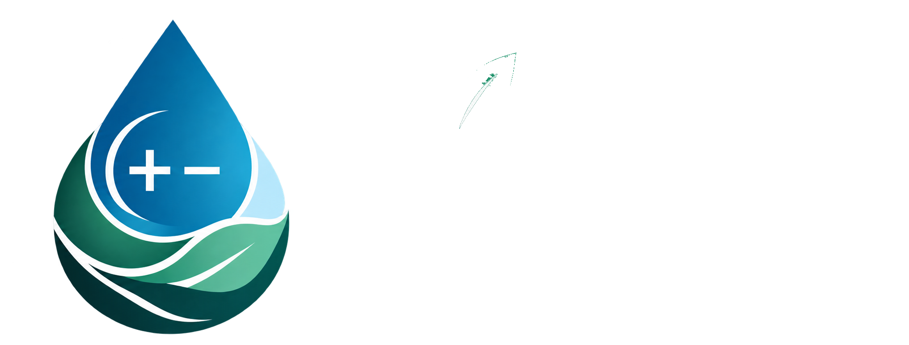

Electrokinetic Processes
Development of charged porous materials and electrochemical separation technologies for water treatment, resource recovery, and sustainable processes.
Learn more →
Lin's Laboratory · Feng Chia University
We develop innovative electrochemical technologies for water treatment, resource recovery, and the circular economy.
The Water & Electrochemical Engineering Laboratory (WELL Lab) is dedicated to advancing sustainable water and environmental technologies through interdisciplinary research.
Guided by the Water–Energy–Environment Nexus, our research integrates innovative materials, electrochemical technologies, and numerical modeling to develop efficient and environmentally sustainable solutions.
We aim to promote sustainable water management, enhance energy efficiency, and advance resource recovery and circular economy practices. Our work also addresses water quality and emerging environmental challenges, contributing to the long-term sustainability of aquatic ecosystems and the environment.

WELL Lab Research Framework
Development of charged porous materials and electrochemical separation technologies for water treatment, resource recovery, and sustainable processes.
Learn more →
Multiphysics modeling of ion transport, fluid dynamics, and electrokinetic processes to reveal mechanisms and optimize reactor design and operation.
Learn more →
Investigation of water quality, emerging contaminants, resource recovery, and climate resilience to support sustainable water and environmental systems.
Learn more →Water Research , Article 126770 (2026). DOI ↗
View paper ↗Chemical Engineering Journal , Article 153693 (2024). DOI ↗
View paper ↗Agricultural Water Management , 289, 108574 (2023). DOI ↗
View paper ↗WELL Lab · Department of Environmental Engineering and Science
Feng Chia University
Email: yuilin@fcu.edu.tw